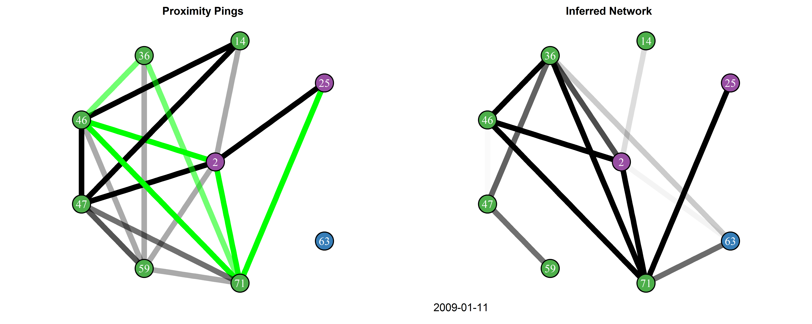

Relational-event-networks
Supplementary material for paper "Inferring social structure from continuous-time interaction data"
View the Project on GitHub wesleytlee/relational-event-networks
Link to paper.
Authors
Proximity Interactions among College Students
Data
We consider the MIT Social Evolution dataset, which can be accessed here. This dataset consists of Bluetooth proximity pings between the occupants of an MIT undergraduate dormitory in the 2008-2009 school year.
Graphics
To reproduce the figures in /students/figures, download the data from the above link and sequentially run process_data.R, stan_sampling.R, and create_figs.R.

The interactions and inferred relations for a subset of the students over the course of December to March is animated here. While active, students are colored by their floor of residence, an important explanatory factor of social structure. In the network of interactions, edges denote recent activity for dyads, with opacity denoting the temporal proximity of this activity. Edges are colored green if they correspond to dyads for which we inferred are friends with probability 0.8 or higher. In our inferred network, the opacity of edges corresponds to the inferred probability that the two students are connected.
Proximity Interactions among Barn Swallows
Data
We consider a barn swallow telemetry dataset provided by Iris Levin and Rebecca Safran. The dataset was gathered from 17 barn swallows, tracked using proximity loggers over a four day period in Colorado.
Graphics
Given the raw data, figures in /swallows/figures can be reproduced by running, in order, process_data.R, stan_sampling.R, and create_figs.R.

An animation of all logged encounters and the network of inferred social relations can be found here. The swallows are colored by sex while active and are grey when inactive. Edges in the encounter network denote recent encounters between swallows, while edges in the inferred network denote estimated connections between swallows.